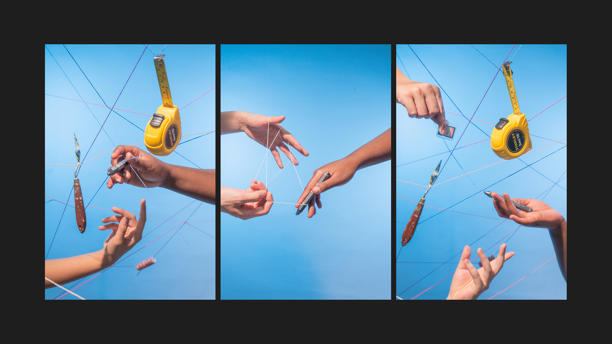
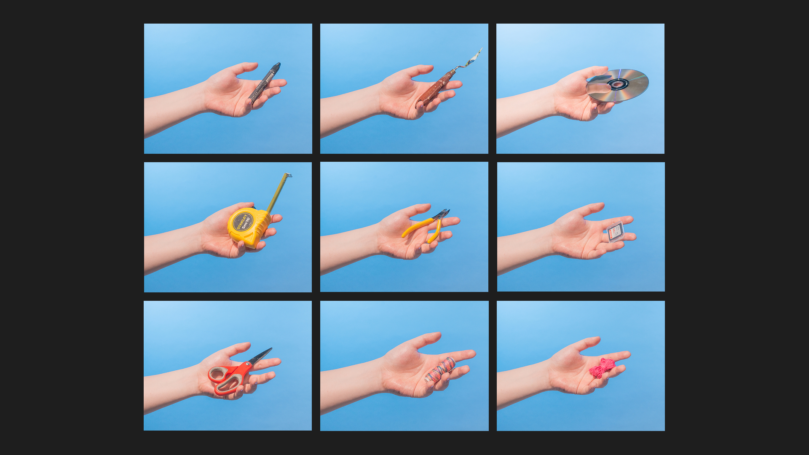
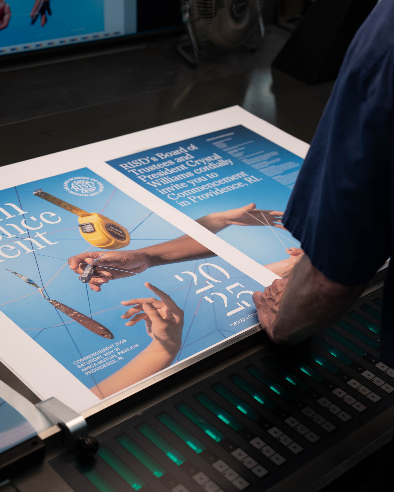
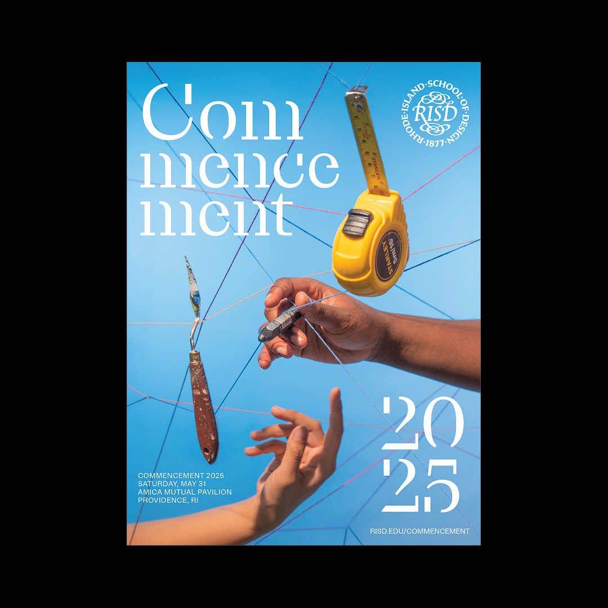
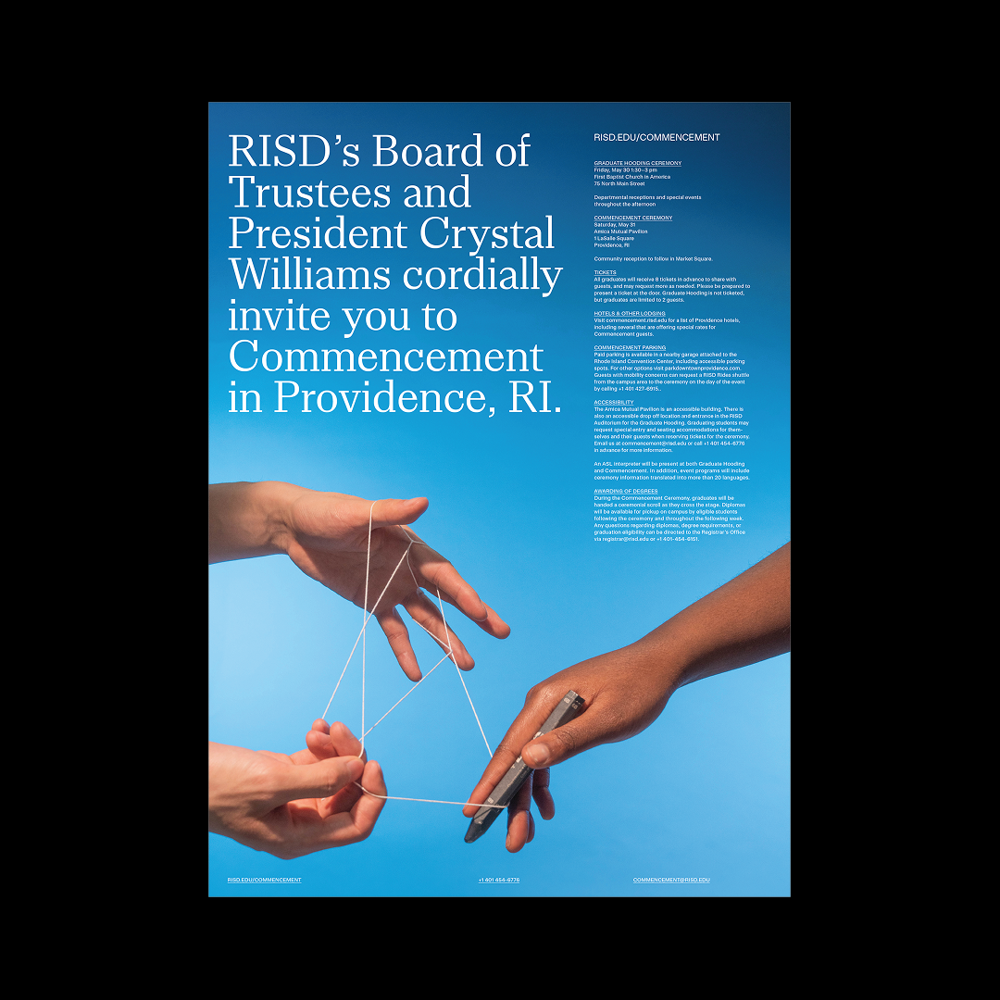
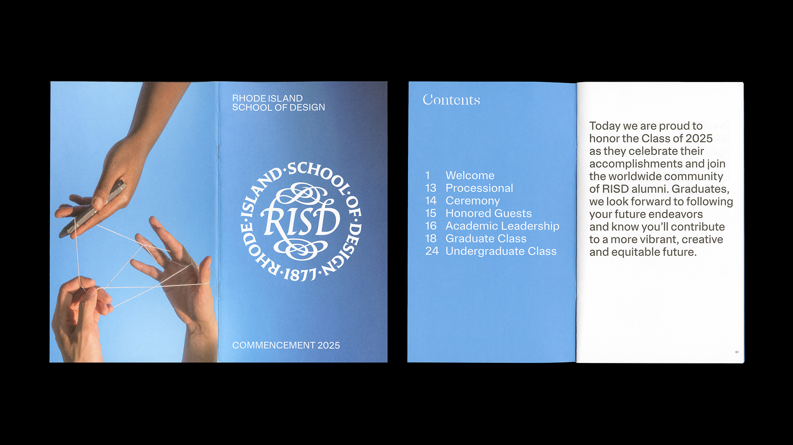
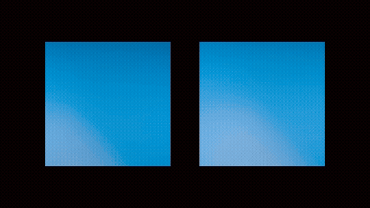

Commencement
RISD 2025
2025
Branding
Print, Motion, Film/Photography
This was a group project focused on emphasizing the idea of RISD as a cradle of creativity and craft, blended in with the original brand identity of the school. Inspired by the visual form of Cat's Cradle, the branding system delivers the feel of joyful celebration and community through motion and photography. It was done as a part of RISD Design Guild, with Li Huang and Nadine Macapagal, in partnership with RISD Marketing & Communications team.









